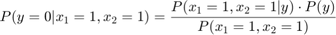

CAB420 Assignment 2
Shaun Sewell
N9509623
Contents
Part A
Support Vector Machines
1. For the first three datasets, consider the linear, second order polynomial, and Gaussian of standard deviation 1 kernels. For each dataset provide a rationale for which kernel should be the best for training a SVM classifier on that dataset. Choose the best kernel for each dataset and plot the decision boundary and test errors with svm test.m. Hand in the three plots. (for consistency, everybody should use C = 1000).
clear ; close all; clc addpath(genpath('Matlab Files')); load("data_ps3_2.mat"); C = 1000;
Given that the plot of the data from set 1 is visually seperable with a straight line the linear kernel should be the best performing.
svm_test(@Klinear, 0, C, set1_train, set1_test);
Given that the plot of the data from set 2 is visually seperable with a quadratic the poly kernel of order 2 should be the best performing.
MIGHT NEED TO EXPLAIN WHY GUASSIAN WONT WORK
svm_test(@Kpoly, 2, C, set2_train, set2_test);
With the thrid set being seperated into distinct clusters, with no obvious way for the linear or second order poly to partition them, the gaussian kernel is likely to perform the best. NEED MORE REASONING HERE
svm_test(@Kgaussian, 1, C, set3_train, set3_test);
2. For the digit dataset (set4 train and set4 test), train and test SVM’s with a linear, polynomial of degree 2, and Gaussian of standard deviation 1.5 kernels. Report the test errors.
% Linear training set4_svm_linear = svm_train(set4_train,@Klinear,0,C); % verify y_prediction_linear = sign(svm_discrim_func(set4_test.X,set4_svm_linear)); errors_linear = find(y_prediction_linear ~= set4_test.y); fprintf('Linear: %g%% of test examples were misclassified.\n',... length(errors_linear)/length(set4_test.y)) % Poly training set4_svm_poly = svm_train(set4_train,@Kpoly,2,C); % verify y_prediction_poly = sign(svm_discrim_func(set4_test.X,set4_svm_poly)); errors_poly = find(y_prediction_poly ~= set4_test.y); fprintf('Poly: %g%% of test examples were misclassified.\n',... length(errors_poly)/length(set4_test.y)) set4_svm_gaus = svm_train(set4_train,@Kgaussian,1.5,C); % verify y_prediction_gaus = sign(svm_discrim_func(set4_test.X,set4_svm_gaus)); errors_gaus = find(y_prediction_gaus ~= set4_test.y); fprintf('Gaussian: %g%% of test examples were misclassified.\n',... length(errors_gaus)/length(set4_test.y))
Linear: 0.1375% of test examples were misclassified. Poly: 0.12% of test examples were misclassified. Gaussian: 0.085% of test examples were misclassified.
Bayes Classifiers
(a) When creating a joint Bayes classifier the probabilities you need are the probability of each x1,x2 combination occuring. An estimate of these values can be found by simply counting how many of these combinations occur with each class.
Estimated probability values from training data:
x1 | x2 | y=0 | y=1 | P(y=0|x1,x2) | P(y=1|x1,x2) 0 | 0 | 1 | 3 | 25% | 75% 0 | 1 | 1 | 3 | 25% | 75% 1 | 0 | 3 | 0 | 100% | 0% 1 | 1 | 3 | 2 | 60% | 40%
Classifying the test set:
x1 | x2 | y-pred | y 0 | 1 | 1 | 1 1 | 0 | 0 | 1 1 | 1 | 0 | 0
(b) When creating a naive Bayes classifier the probabilities you need are the probability of each class and the probability of a feature given each class
First we need the probability of each class y 
Next we need the probability of a feature (x1 or x2) given a class y
| y=0 | y=1 x1=0 | 2/8 | 6/8 x1=1 | 6/8 | 2/8 x2=0 | 4/8 | 3/8 x2=1 | 4/8 | 5/8
P(x|y) needs to be calculated for each x1,x2 combination in the test set.
First test data point x1=0, x2=1, y=1

Second test data point x1=1, x2=0, y=1
Third test data point x1=1, x2=1, y=0
Next calculate P(x) using the formula
for all feature values in the test set.
Using Bayes rule to find P(y|x1,x2)
First test data point x1=0, x2=1
Therefore:
Second test data point x1=1, x2=0
Therefore:
Third test data point x1=1, x2=1

Therefore:
x1 | x2 | P(y=0|x) | P(y=1|x) | y-pred | y 0 | 1 | 21% | 79% | 1 | 1 1 | 0 | 80% | 20% | 0 | 1 1 | 1 | 71% | 29% | 0 | 0
Part B
EigenFaces
X = load('data/faces.txt'); % load face dataset img = reshape(X(1,:),[24 24]); % convert vectorized datum to 24x24 image patch imagesc(img); axis square; colormap gray; % display an image patch title('Example EigenFace') % (a) *Subtract the mean of the face images (X0 = X - u) to make your data % zero-mean* mu = mean(X); X0 = bsxfun(@minus, X, mu); sigma = std(X0); X0 = bsxfun(@rdivide, X0, sigma); [U, S, V] = svd(X0); W=U*S; % (b) *For k = 1...10 compute the approximation to X0 using % X^0 = W(:,1:k).V(:,1:k)'. Compute the MSE in the SVD's approximation % mean(mean(X0-X^0).^2. Plot them as a function of k* k = 1:10; mse = zeros(size(k)); for i=k X0_approx = W(:, 1:i)*V(:, 1:i)'; mse(i) = mean(mean((X0-X0_approx).^2)); end figure(); hold on; plot(k, mse); title('Mean Squared Error Vs K'); xlabel('K'); ylabel('MSE'); hold off; % (c) *Display the first few principal directions of the data, by computing % mu+alpha*V(:,j)' and mu-alpha*V(:,j)' where alpha = 2*median(abs(W(:,j))* positive_direction = {}; negative_direction = {}; for j=1:3 alpha = 2*median(abs(W(:, j))); positive_direction{j} = mu + alpha*(V(:, j)'); negative_direction{j} = mu - alpha*(V(:, j)'); end for p=1:3 img = reshape(positive_direction{p}, [24, 24]); figure('name', sprintf('Positive Direction %d', p)); imagesc(img); title(sprintf('Positive Direction %d', p)); axis square; colormap gray; end for n=1:3 img = reshape(negative_direction{n}, [24, 24]); figure('name', sprintf('Negative Direction %d', n)); imagesc(img); title(sprintf('Negative Direction %d', n)) axis square; colormap gray; end % (d) *Choose a few faces at random ( say, about 15-25), and display them as % images with the coordinates given by their coeficients on the first two % principal components:* idx = randi([1,4916], 1, 25); figure; hold on; axis ij; colormap gray; range = max(W(idx, 1:2)) - min(W(idx, 1:2)); scale = [200, 200]./range; for i=idx imagesc(W(i, 1)*scale(1),W(i, 2)*scale(2),reshape(X(i, :), 24, 24)); end % (e) *Choose two faces and reconstruct them using only K principal % directions, for K = 5,10,50* k_directions = [5, 10, 50]; faces = randi([1,4916], 1, 2); for f=faces figure('name', sprintf('face %d', f)); imagesc(reshape(X(f,:), [24, 24])); axis square; colormap gray; title(sprintf('face %d', f)); for i=1:length(k_directions) figure('name', sprintf('face %d reconstructed with %d pcs', f, k_directions(i))); imagesc(reshape(W(f, 1:k_directions(i))*V(1:576, 1:k_directions(i))', 24, 24)); axis square; colormap gray; title(sprintf('face %d reconstructed with %d pcs', f, k_directions(i))); end end